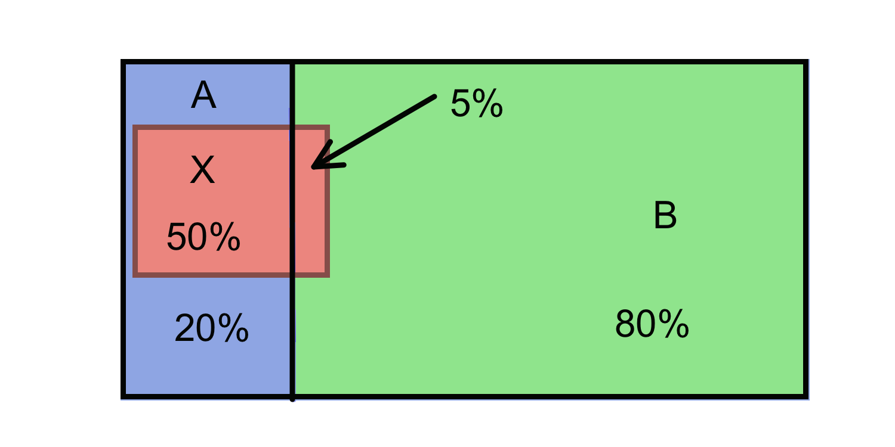

Lección 1 Probabilidades elementales “en abstracto”
La probabilidad de un suceso es, básicamente, un número entre 0 y 1 (o, si lo preferís, un porcentaje entre 0% y 100%) que mide la expectativa de que se dé este suceso. En este curso vamos a definir la probabilidad de un suceso como la proporción (la fracción, el porcentaje) de sujetos de una población (o a veces de una muestra, dependerá del contexto) en los que se da el suceso.
Ejemplo 1.1 La probabilidad de que al lanzar una moneda al aire salga cara es la proporción de la población (virtual) de lanzamientos de esta moneda en los que sale cara.
En casos MUY sencillos, esta proporción coincide con la fracción de veces en que se da este suceso en el conjunto de resultados posibles, es decir, se puede calcular con la fórmula de Laplace: \[ \text{Probabilidad}=\frac{\text{Casos favorables}}{\text{Casos posibles}} \]
¡Atención! Esta fórmula solo es verdadera cuando todos los resultados posibles tienen la misma probabilidad (y aquí puede que entremos en un bucle: para poder aplicar esta fórmula hay que saber la probabilidad de cada uno de los resultados posibles, porque hay que garantizar que son iguales; pero no podemos calcularlas con esta fórmula sin saber que todas son iguales; pero para saberlo necesitamos calcularlas…)
Por ejemplo:
La probabilidad de que salga cara al lanzar una moneda equilibrada al aire es 1/2 (casos favorables, 1; casos posibles, 2; los dos resultados tienen la misma probabilidad).
La probabilidad de escoger al azar un estudiante varón en una clase de 50 mujeres y 10 hombres, si todos los estudiantes tienen la misma probabilidad de ser elegidos, es 10/60=1/6 (casos favorables, 10; casos posibles, 60; todos los individuos tienen la misma probabilidad de ser elegidos).
Pero la probabilidad de que un hijo sea varón no es 1/2, aunque solo haya dos sexos anatómicos. Es la proporción de hijos varones en el total de todos los hijos, que se estima en alrededor del 51.22%
O más exageradamente, la probabilidad de que una mujer de entre 17 y 27 años sea miope no es 1/2, aunque solo haya dos resultados posibles: ser miope y no serlo. Esta probabilidad es la proporción de miopes en la población formada por todas las mujeres de esa franja de edad, que, en España en 2018, se estimaba en un 65.4% según un informe de la Asociación Visión y Vida.
Si lanzamos al aire dos veces seguidas una moneda equilibrada, ¿cuál es la probabilidad de que salga alguna cara?
Según el enciclopedista y matemático J. d’Alembert es 2/3. Su argumento era el siguiente. Si en el primer lanzamiento sale cara, ya tenemos una cara. Si sale cruz, volvemos a lanzar otra vez y miramos si sale cara o cruz. Por lo tanto, hay solo 3 resultados posibles: cara en el primer lanzamiento; cruz en el primer lanzamiento y cara en el segundo; cruz en ambos lanzamientos. De estos tres “casos posibles”, solo en los 2 primeros sale alguna cara. Casos favorables partido por casos posibles: 2/3.
¿Qué falla en este argumento?La teoría matemática de las probabilidades es la que nos permite estudiar lo exacta que es una estimación de un valor para una población a partir de una muestra. Por ejemplo, supongamos que elegimos al azar un grupo de 50 estudiantes de la UIB y observamos que 33 sufren de miopía. A partir de este dato, vamos a estimar que un 66% de los estudiantes de la UIB son miopes. ¿Hasta qué punto nos podemos fiar de esta estimación? La teoría de las probabilidades nos permitirá calcular la probabilidad de acertar con esta estimación más o menos un margen de error fijado.
En medicina, las probabilidades (recordad, las proporciones de sujetos de una población con una determinada característica) aparecen bajo diferentes términos. Por ejemplo
Riesgo de algo: La probabilidad de que ese algo (usualmente negativo, por la connotación de la palabra “riesgo”) pase
Prevalencia de algo: La probabilidad de que un individuo de una población tenga ese algo en un momento determinado.
Tasa de algo: Sinónimo de la “proporción” o la “fracción” de ese algo en algún total. Por ejemplo:
La tasa de mortalidad de una enfermedad es la proporción de individuos de una población que mueren a causa de esa enfermedad en un período determinado de tiempo, y por tanto la probabilidad de que un individuo de esa población muera por esa enfermedad en ese período.
La tasa de letalidad de una enfermedad es la proporción de enfermos (de esa enfermedad, se entiende) en una población que mueren a causa de esa enfermedad en un período determinado de tiempo, y por tanto la probabilidad de que un enfermo muera por esa enfermedad en ese período.
Al hablar de incidencia, a veces se usa el término tasa de incidencia de una enfermedad para significar la proporción de casos nuevos de esa enfermedad en una población (sana) en un cierto periodo de tiempo, y por lo tanto es la probabilidad de que un individuo (sano) escogido al azar de una población coja esa enfermedad durante ese período.
Ejemplo 1.2 En el artículo “Incidencia, prevalencia y mortalidad del cáncer renal en España: estimaciones y proyecciones para el período 1998-2022” (Actas Urológicas Españolas 36 (2012), pp. 521-526) se puede leer:
En hombres se espera un aumento de la tasa de incidencia [del cáncer de riñón] de 11.92 casos por 100000 habitantes/año a 15.7. La prevalencia aumentaría de 72.842 a 94.47 y la mortalidad de 5.77 a 7.29.
En todos los casos se trata de estimaciones de probabilidades. Se estima que:
La probabilidad de que un hombre sano enfermara de cáncer de riñón en 1998 fue de 0.0001192 y en 2022 será de 0.000157.
La probabilidad de que un hombre tuviera cáncer de riñón en 1998 fue de 0.00072842 y en 2022 será de 0.0009447.
La probabilidad de que un hombre muriera de cáncer de riñón en 1998 fue de 0.0000577 y en 2022 será de 0.0000729.
Leído en el MallorcaDiario.com: “La tasa de mortalidad a causa del COVID-19 en Baleares fue del 1.06 por ciento frente al 2.17 por ciento a nivel nacional […]. En el caso de personas mayores de 74, la tasa de mortalidad de Baleares (12.74 por ciento) está casi diez puntos porcentuales por debajo que la media nacional de personas de a misma edad, que llegó hasta el 22,34 por ciento.”
¿De qué están hablando realmente, de la tasa de mortalidad de la COVID-19 o de su tasa de letalidad?1.1 Álgebra de conjuntos
Vamos a repasar muy rápidamente las notaciones y las propiedades de las operaciones de conjuntos. Sean \(A\) y \(B\) subconjuntos (en el contexto de la teoría de probabilidades, se los llama sucesos) de un conjunto \(\Omega\) (nuestra población o, en el lenguaje de la teoría de probabilidades, el espacio muestral).
\(A\cup B\) es la unión de \(A\) y \(B\): el conjunto formado por los elementos que pertenecen a \(A\) o a \(B\) (o a ambos).
Corresponde a la disjunción del lenguaje natural.
\(A \cap B\) es la intersección de \(A\) y \(B\): el conjunto formado por los elementos que pertenecen simultáneamente a \(A\) y a \(B\).
Corresponde a la conjunción del lenguaje natural.
\(A^c\) es el complementario de \(A\): el conjunto formado por los elementos de \(\Omega\) que no pertenecen a \(A\).
Corresponde a la negación del lenguaje natural.
\(A-B=A \cap B^c\) es la diferencia “\(A\) menos \(B\)”: es el conjunto formado por los elementos que pertenecen a \(A\) pero no pertenecen a \(B\).
Diremos que \(A\) y \(B\) son disjuntos, o incompatibles, cuando \(A\cap B=\emptyset\), donde \(\emptyset\) es el conjunto vacío, el conjunto que no tiene elementos.
Diremos que \(A\) está contenido, o incluido, en \(B\), y lo denotaremos por \(A\subseteq B\), cuando todo elemento de \(A\) pertenece a \(B\). Para denotar que \(A\) está estrictamente contenido en \(B\) usaremos \(A\subsetneq B\).
Ejemplo 1.3 Consideremos la población \(\Omega\) formada por los estudiantes de una clase, y sean \(A\) el subconjunto formado por la mujeres de esa clase y \(B\) el subconjunto formado por los estudiantes de esa clase que llevan gafas.
Entonces:
\(A\cup B\) es el conjunto de los estudiantes de la clase que son mujeres o llevan gafas.
\(A \cap B\) es el conjunto de los estudiantes de la clase que son mujeres y llevan gafas, es decir, las mujeres de la clase que llevan gafas.
\(B^c\) es el conjunto de los estudiantes de la clase que no son mujeres, es decir el conjunto de los hombres de la clase.
\(B^c\) es el conjunto de los estudiantes de la clase que no llevan gafas.
\(A-B\) es el conjunto de las mujeres de la clase que no llevan gafas.
\(B-A\) es el conjunto de los hombres de la clase que llevan gafas.
\(A\) y \(B\) serán disjuntos (llevar gafas y ser mujer es incompatible en esta clase) si no hay ninguna mujer en la clase que lleve gafas.
\(A\subseteq B\) será verdad si todas las mujeres de la clase llevan gafas.
\(B\subseteq A\) será verdad si todos los estudiantes de la clase que llevan gafas son mujeres.
Las propiedades de estas operaciones son las siguientes, y se corresponden a las propiedade de las conjunciones, disjunciones y negaciones en el lenguaje natural.
La unión y la intersección son conmutativas: \(A\cup B=B\cup A\) y \(A\cap B=B\cap A\).
La unión y la intersección son asociativas: \(A\cup(B\cup C)=(A\cup B)\cup C\) y \(A\cap(B\cap C)=(A\cap B) \cap C\).

Figura 1.1: Propiedad asociativa de la unión.

Figura 1.2: Propiedad asociativa de la intersección.
- La unión y la intersección son distributivas: \(A\cap(B\cup C)=(A\cap B)\cup (A\cap C)\) y \(A\cup(B\cap C)=(A\cup B)\cap (A\cup C)\).
Figura 1.3: Propiedad distributiva de la unión respecto de la intersección.
Figura 1.4: Propiedad distributiva de la intersección respecto de la unión.
Propiedad del doble complementario: \((A^c)^c=A\).
Corresponde al hecho de que, en el lenguaje natural, “No es verdad que no lleve gafas” significa lo mismo que “Lleva gafas”.
Figura 1.5: Propiedad del doble complementario.
Leyes de De Morgan: \((A\cup B)^c=A^c \cap B^c\) y \((A\cap B)^c=A^c\cup B^c\).
La primera corresponde al hecho de que, en el lenguaje natural, lo contrario de “Ser mujer o llevar gafas” es “No ser mujer Y no llevar gafas”. La segunda corresponde al hecho de que, en el lenguaje natural, lo contrario de “Ser mujer y llevar gafas” es “No ser mujer O no llevar gafas”.

Figura 1.6: Primera ley de de Morgan.
Figura 1.7: Segunda ley de de Morgan.
El hecho de que la unión y la intersección sean asociativas y conmutativas nos premite escribir expresiones del estilo de \[ A_1\cap A_2\cap \cdots \cap A_n,\qquad A_1\cup A_2\cup \cdots \cup A_n \] para indicar, respectivamente, la intersección o la unión de los sucesos \(A_1,\ldots,A_n\) agrupándolos como queramos y en el orden que queramos.
1.2 Algunas fórmulas básicas
Hemos definido la probabilidad \(P(A)\) de un subconjunto (o suceso) \(A\) de una población (o espacio muestral) \(\Omega\) como la fracción de los sujetos de \(\Omega\) que pertenecen a \(A\). A partir de esta definición se deducen, por puro conteo, las propiedades siguientes:
Para todo suceso \(A\), \(0\leqslant P(A)\leqslant 1\).
Un subconjunto \(A\) de \(\Omega\) no puede representar ni una fracción negativa ni una fracción mayor que 1 de los sujetos de \(\Omega\).
\(P(\Omega)=1\) y \(P(\emptyset)=0\).
Si \(A\) y \(B\) son dos sucesos disjuntos, entonces \(P(A\cup B)=P(A)+P(B)\).
Si no hay ningún sujeto que pertenezca simultáneamente a \(A\) y a \(B\), entonces el número de sujetos que pertenecen a \(A\) o a \(B\) es la suma de los que pertenecen a \(A\) y de los que pertenecen a \(B\). Entonces, dividiendo por el número total de individuos de la población \(\Omega\) (su cardinal), obtenemos que la fracción de los sujetos que pertenecen a \(A\) o a \(B\) se obtiene sumando las fracciones de los que pertenecen a \(A\) y de los que pertenecen a \(B\).
Más en general, si \(A_1,A_2,\ldots,A_n\) son sucesos disjuntos dos a dos, entonces \[ P(A_1\cup A_2\cup \cdots \cup A_n)=P(A_1)+P(A_2)+\cdots +P(A_n). \]
\(P(A-B)=P(A)-P(A\cap B)\).
La fracción del total que representan los sujetos que pertenecen a \(A\) pero no a \(B\) se obtiene restando de la fracción del total que representan los sujetos de \(A\), la fracción del total que representan los pertenecen simultáneamente a \(A\) y a \(B\).
En efecto, como \(A-B\) y \(A\cap B\) son disjuntos (ya que ningún elemento de \(A-B\) pertenece a \(B\) y todos los elementos de \(A\cap B\) pertenecen a \(B\)), tenemos que \[ P((A-B)\cup (A\cap B))=P(A-B)+P(A\cap B). \] Por otro lado, \((A-B)\cup (A\cap B)=A\) porque \(A\) es la unión del conjunto de sus elementos que no pertenecen a \(B\) y del conjunto de sus elementos que sí pertenecen a \(B\) (Figura 1.8).

Figura 1.8: Descomposición de la unión en tres conjuntos disjuntos.
\(P(A^c)=1-P(A)\).
Es decir, la fracción de los sujetos que no pertenecen a \(A\) es 1 menos la fracción de los que sí pertenecen a \(A\).
Si \(A\subseteq B\), entonces \(P(A)\leqslant P(B)\) (si \(A\) está contenido en \(B\), la fracción de los sujetos que pertenecen a \(A\) es más pequeña que la de los que pertenecen a \(B\)).
\(P(A\cup B)=P(A)+P(B)-P(A \cap B)\).
En general, si queréis contar cuántos sujetos hay en \(A\cup B\) y sumáis los de \(A\) y los de \(B\), los de la intersección los contáis dos veces, por lo que para dar el resultado correcto hay que restarlos una vez para compensarlo. Lo mismo pasa con las proporciones.
Formalmente: Como podéis ver en la Figura 1.8, \(A\cup B=(A-B)\cup (B-A)\cup (A\cap B)\) y estos tres conjuntos son disjuntos, por lo que podéis aplicar las propiedades (3) y (5): \[ \begin{array}{rl} P(A\cup B) & = P(A-B)+ P(B-A)+ P(A\cap B)\\ & =P(A)-P(A\cap B)+P(B)-P(A\cap B)+ P(A\cap B)\\ & =P(A)+P(B)-P(A \cap B) \end{array} \] Por ejemplo, si en una población hay un 50% de mujeres y un 60% de miopes, y un 35% del total son mujeres miopes, las personas que son mujeres o miopes (recordad, o ambas cosas) forman un 75% de la población: al 50% de mujeres hay que sumarle el 25% de miopes que no son mujeres.
Otra manera de escribir la ecuación anterior es \[ P(A\cap B)=P(A)+P(B)-P(A \cup B) \]
Si \(A=\{a_1,a_2,\ldots,a_k\}\), entonces \[ P(A)=P(a_1)+P(a_2)+\cdots+P(a_k) \] (de ahora en adelante, para simplificar, si \(a\in \Omega\), escribiremos \(P(a)\) en vez de \(P(\{a\})\)). Esta propiedad se deduce directamente de la propiedad (4).
Fijaos que de esta última propiedad se deduce la Fórmula de Laplace que hemos mencionado al principio de esta lección: Si \(\Omega\) es finito y todos sus elementos tienen la misma probabilidad, entonces \[ P(A)=\frac{|A|}{|\Omega|}=\frac{\text{casos favorables}}{\text{casos posibles}} \] (donde \(|\ldots |\) denota el cardinal del conjunto entre las barras).
En efecto, suponed que \(\Omega\) tiene \(n\) elementos, digamos \(\Omega=\{x_1,\ldots,x_n\}\), y que \(P(x_1)=\cdots=P(x_n)\). Sea \(p\) esta probabilidad común a todos los elementos de \(\Omega\). Entonces, por las propiedades (2) y (10), \[ 1=P(\Omega)=P(x_1)+\cdots+P(x_n)=n\cdot p \] de donde deducimos que \(p=1/n\): cada elemento de \(\Omega\) tiene probabilidad \(1/n\).
Si ahora \(A\) tiene \(k\) elementos, digamos \(A=\{x_{i_1},\ldots,x_{i_k}\}\), entonces
\[ P(A)=P(x_{i_1})+\cdots+P(x_{i_k})=\overbrace{\frac{1}{n}+\cdots+\frac{1}{n}}^k==\frac{k}{n}=\frac{|A|}{|\Omega|} \]
¡Ojo! En general, es falso que \(P(A\cap B)=P(A)\cdot P(B)\). Por ejemplo, en la problación con un 50% de mujeres, un 60% de miopes y un 35% de mujeres miopes que hemos usado antes, 0.6·0.5 no es igual a 0.35.
Más adelante veremos cuándo esta igualdad sí se cumple.Ejemplo 1.4 Supongamos el 0.1% de todos los donantes de sangre da positivo en el test de VIH, y el 1% da positivo en el test de herpes simple (VHS). El 0.05% da positivo en ambos tests.
(a) ¿Cuál es la probabilidad de que un donante escogido al azar dé positivo en al menos uno de los dos tests?
(b) ¿Cuál es la probabilidad de que un donante escogido al azar dé positivo en VHS pero no en VIH?
Vamos a poner nombres a los sucesos involucrados en estas preguntas:
\(A\): Dar positivo en VIH. Sabemos que \(P(A)=0.001\).
\(B\): Dar positivo en VHS. Sabemos que \(P(B)=0.01\).
\(A\cap B\): Dar positivo en los dos. Sabemos que \(P(A\cap B)=0.0005\).
\(A\cup B\): Dar positivo en al menos uno de los dos. Es lo que queremos calcular en (a).
Por la propiedad (8): \[ P(A \cup B) =P(A)+P(B)-P(A\cap B)=0.001+0.01-0.0005=0.0105 \] La probabilidad de que un donante escogido al azar dé positivo en al menos uno de los dos tests es del 1.05%.
\(B-A\): Dar positivo en VHS pero no en VIH. Es lo que queremos calcular en (b).
Por la propiedad (5), \[ P(B-A)=P(B)-P(A\cap B)=0.01-0.0005=0.0095 \] La probabilidad de que un donante escogido al azar dé positivo en VHS pero no en VIH es del 0.95%.
Otra manera de calcular estas probabilidades sin necesidad de recordar fórmulas sería:
Tomar como referencia una población de un tamaño concreto.
Calcular en esta población cuántos individuos pertenecen a \(A\cap B\) (dan positivo en ambos tests), cuántos a \(A-B\) (positivos en VIH pero no en VHS), cuántos a \(B-A\) (positivos en VHS pero no en VIH) y cuántos a \(A^c\cap B^c\) (negativo en ambos tests) y a partir de aquí calcular todo lo que queramos.
A este método se le suele llamar método de frecuencias naturales, y así nos referiremos nosotros a él. Pongámoslo en práctica en nuestro caso:
Vamos a tomar una población de referencia de 10,000 donantes ¿Por qué este número? Veamos, fijaos en que la proporción de sujetos en \(A\cap B\) es del 0.05%, es decir, 0.0005, y para facilitar los cálculos me gustaría que todos los números que me salgan sean enteros, para no liarme con decimales. Como 0.0005·10000=5, parece que 10,000 me va a valer.
Los sujetos de \(A\) son el 0.1% de la población: 10
Los sujetos de \(B\) son el 1% de la población: 100
Los sujetos de \(A\cap B\) son el 0.05% de la población: 5
Entonces, los sujetos de \(A-B\) serán los de \(A\) menos los de \(A\cap B\): 5
Y los sujetos de \(B-A\) serán los de \(B\) menos los de \(A\cap B\): 95
Por ahora ya tenemos: 5 sujetos positivos en VIH y en VHS; 5 positivos en VIH y negativos en VHS; y 95 positivos en VHS y negativos en VIH. En total, 105 sujetos. El resto serán negativos tanto en VIH como en VHS.
Por lo tanto, los sujetos de \(A^c\cap B^c\) serán 10000-105=9895.
Obtenemos la tabla de frecuencias siguiente: \[ \begin{array}{r|c|c|c} & A\ (\text{VIH}+) & A^c \ (\text{VIH}-) & \text{Total} \\ \hline B\ (\text{VHS}+) & 5 & 95 & 100 \\ \hline B^c\ (\text{VHS}-) & 5 & 9895 & 9900 \\ \hline \text{Total} & 10& 9990 & 10000 \\ \end{array} \]
Y ahora, cambiando “probabilidad” por “proporción”, ya podemos calcular lo que queramos.
(a) ¿Cuál es la proporción de sujetos que dan positivo en algún test?
Hay 105 sujetos en la tabla que dan positivo en algún test, por lo que la proporción es 105/10000=0.0105
(b) ¿Cuál es la proporción de sujetos que dan positivo en VHS pero no en VIH?
Hay 95 sujetos en la tabla que dan positivo en VHS y negativo en VIH, por lo que la proporción es 95/10000=0.0095
Seguimos en la situación anterior: el 0.1% de todos los donantes de sangre da positivo en el test de VIH, el 1% da positivo en el test de herpes, y el 0.05% da positivo en los dos tests.
¿Cuál es la probabilidad de que un donante escogido al azar dé positivo en un solo test?Supongamos ahora que 0.1% de todos los donantes de sangre da positivo en el test de VIH, el 1% da positivo en el test de herpes y el 1.06% da positivo en al menos uno de los dos tests.
(a) ¿Cuál es la probabilidad de que un donante escogido al azar dé positivo en ambos?
(b) ¿Cuál es la probabilidad de que un donante escogido al azar dé positivo en un solo test?
1.3 Odds
En algunos contextos, las probabilidades se presentan en forma de odds (la traducción más común en castellano es momios, pero se usan otras: posibilidades, oportunidades, ocasiones…). Las odds de un suceso \(A\) son \[ \text{Odds}(A)=\frac{P(A)}{P(A^c)}=\frac{P(A)}{1-P(A)}. \] y nos dicen cuántas veces es más probable \(A\) que “no \(A\)”.

Figura 1.9: Momios de gatitos en el British Museum (fotografía de M. Sánchez).
Si \(\text{Odds}(A)=q\), significa que por cada vez que ocurre “no \(A\)”, ocurre \(q\) veces \(A\). Por ejemplo, si las odds de suspender una asignatura son 2/3, significa que:
- Por cada estudiante que aprueba, hay 2/3 de estudiante que suspenden.
- Por cada 3 estudiantes que aprueban, hay 2 que suspenden.
- De cada 5 estudiantes, 3 aprueban y 2 suspenden.
- 2 de cada 5 estudiantes suspenden
- La probabilidad de suspender es de un 40%.
Ejemplo 1.5 Algunos ejemplos de odds a partir de probabilidades:
- Si \(P(A)=0.2\), \(\text{Odds}(A)=0.2/0.8=0.25\).
- Si \(P(A)=0\), \(\text{Odds}(A)=0\).
- Si \(P(A)=0.5\), \(\text{Odds}(A)=1\).
- Si \(P(A)=1\), \(\text{Odds}(A)=\infty\).
Como son un cociente de dos probabilidades, las odds de un suceso son siempre mayor o iguales que 0, incluyendo la posibilidad de valer, \(\infty\), y pueden tomar cualquier valor entre 0 e \(\infty\).
Si lanzamos un dado equilibrado de 10 caras al aire:
¿Qué valen las odds de sacar un 3?
¿Qué valen las odds de sacar un múltiplo de 3?
Si sabemos las odds de \(A\), podemos calcular la probabilidad \(P(A)\): \[ \begin{array}{rl} \text{Odds}(A)=\dfrac{P(A)}{1-P(A)}\!\!\!\! & \Longrightarrow \text{Odds}(A)-\text{Odds}(A)P(A)=P(A)\\ & \Longrightarrow P(A)=\dfrac{\text{Odds}(A)}{1+\text{Odds}(A)} \end{array} \]
Observad que la función \[ y=\frac{x}{1+x} \] es creciente en \(x\):

Figura 1.10: Gráfica de la curva y=x/(1+x).
Por lo tanto \[ \begin{array}{c} \text{Odds}(A)<\text{Odds}(B)\Longleftrightarrow P(A)<P(B)\\ \text{Odds}(A)>\text{Odds}(B)\Longleftrightarrow P(A)>P(B)\\ \text{Odds}(A)=\text{Odds}(B)\Longleftrightarrow P(A)=P(B) \end{array} \] Es decir, \(A\) es más probable que \(B\) si, y solo si, las odds de \(A\) son mayores que las de \(B\).
Como veremos en su momento, en los estudios de casos y controles, la manera correcta de presentar cuánto más probable es un desenlace si se ha estado expuesto a un factor de riesgo que si no se ha estado es por medio de una odds ratio. La odds ratio (razón de momios, de oportunidades…) de dos sucesos \(A\) y \(B\) es el cociente de sus odds: \[ \text{OR}(A,B)=\frac{\text{Odds}(A)}{\text{Odds}(B)} \] Su valor es difícil de interpretar excepto lo que refiere a su relación con 1:
\(\text{OR}(A,B)=1\Longleftrightarrow \text{Odds}(A)=\text{Odds}(B) \Longleftrightarrow P(A)=P(B)\)
\(\text{OR}(A,B)>1\Longleftrightarrow \text{Odds}(A)>\text{Odds}(B) \Longleftrightarrow P(A)>P(B)\)
\(\text{OR}(A,B)<1\Longleftrightarrow \text{Odds}(A)<\text{Odds}(B) \Longleftrightarrow P(A)<P(B)\)
Pero, por ejemplo \[ \text{OR}(A,B)=2 \Longleftrightarrow \text{Odds}(A)= 2\cdot \text{Odds}(B) \hspace{1.2ex} \not\hspace{-1.2ex}\Longleftrightarrow P(A)= 2\cdot P(B) \]
Ejemplo 1.6 En un estudio de casos y controles reciente (Y. Nobel et al, Gastroenterology 159 (2020), pp. 373-375) se afirma que
“la presencia de síntomas gastrointestinales se asoció a un incremento del 70% en el riesgo de dar positivo [en el test de COVID-19]: odds ratio, 1.7.”
¿Qué significa esto? Que la odds ratio valga 1.7 significa que las odds de dar positivo en COVID-19 si se tienen síntomas gastrointestinales son 1.7 veces las de dar positivo si no se tienen síntomas gastrointestinales, es decir un 70% mayores. Pero fijaos que estamos hablando de las odds, no del riesgo entendido en sentido de probabilidad: no tiene por qué ser cierto que la probabilidad de dar positivo en COVID-19 si se tienen síntomas gastrointestinales sea un 70% mayor que si no se tienen síntomas gastrointestinales.
En este estudio concreto, se obtuvo la tabla de frecuencias siguiente (SG significa “síntomas gastrointestinales”) \[ \begin{array}{r|c|c|c} & \text{COVID-19 } + & \text{COVID-19 } + & \text{Total}\\ \hline \text{SG Sí} & 97& 63 & 160\\\hline \text{SG No} & 181 & 175 & 356\\\hline \text{Total} & 278 & 238 & 316 \end{array} \] por lo que la proporción de COVID-19 positivos entre los que tuvieron síntomas gastrointestinales fue 97/160=0.6 y la proporción de COVID-19 positivos entre los que no tuvieron síntomas gastrointestinales fue 181/356=0.5: la primera es un 20% mayor que la segunda, no un 70% mayor.
¿Qué valen las odds de sacar 3 caras en 3 lanzamientos de una moneda equilibrada?
Si un suceso pasa 2 veces de cada 10 veces que puede pasar, ¿qué valen sus odds?
Si las odds de \(A\) son 1/2, ¿qué vale \(P(A)\)?
Si \(\text{OR}(A,B)=0.5\) y \(P(A)=1/2\), ¿qué vale \(P(B)\)?
Sí \(\text{OR}(A,B)=0.5\) y \(P(A)=3/4\), ¿qué vale \(P(B)\)?
1.4 Probabilidad condicionada
Dados dos sucesos \(A\) y \(B\), con \(P(A)>0\), la probabilidad \(P(B|A)\) de \(B\) condicionada a \(A\) es \[ P(B|A)=\frac{P(A\cap B)}{P(A)} \]
Este valor es la probabilidad de que si pasa \(A\), entonces pase \(B\); es decir, la fracción de los sujetos de \(A\) que pertenecen a \(B\).
Ejemplo 1.7 Supongamos que en una clase de 20 hombres y 30 mujeres, 15 hombres y 18 mujeres llevan gafas. La tabla de frecuencias correspondiente es
\[ \begin{array}{r|c|c|c} & \text{Gafas} & \text{No gafas} & \text{Total}\\ \hline \text{Mujeres} & 18 &12 & 30\\ \hline \text{Hombres} & 15 & 5 & 20 \\ \hline \text{Total} & 33 & 17 & 50 \\ \end{array} \]
- ¿Cuál es la probabilidad de que un estudiante sea mujer?
Como hay 30 mujeres de un total de 50 estudiantes, esta probabilidad es 30/50=0.6
- ¿Cuál es la probabilidad de que un estudiante lleve gafas?
Como hay 33 estudiantes con gafas de un total de 50 estudiantes, esta probabilidad es 33/50=0.66
- ¿Cuál es la probabilidad de que un estudiante sea mujer y lleve gafas?
Como la probabilidad de ser mujer es 0.6 y la probabilidad de llevar gafas es 0.65, la probabilidad de ser mujer y llevar gafas es el producto: 0.6·0.66=0.396.
Volvamos a intentarlo. Como hay 18 mujeres que lleven gafas de un total de 50 estudiantes, esta probabilidad es 18/50=0.36
- ¿Cuál es la probabilidad de que una mujer lleve gafas?
Como hay 18 mujeres que lleven gafas de un total de 30 mujeres, esta probabilidad es 18/30=0.6. Fijaos que este valor es igual a \[ P(\text{gafas}|\text{mujer})=\frac{P(\text{mujer y gafas})}{P(\text{mujer})}=\frac{18/50}{30/50}=\frac{18}{30} \]
- Escogemos un estudiante al azar. ¿Cuál es la probabilidad de que si es mujer, entonces lleve gafas?
Es la misma pregunta que la anterior, por lo que la respuesta es la misma: 18/30=0.6.
- ¿Cuál es la probabilidad de que un estudiante que lleve gafas sea mujer?
Como hay 18 mujeres que lleven gafas de un total de 33 estudiantes que lleven gafas, esta probabilidad es 18/33=0.545. Fijaos, de nuevo, que este valor es igual a \[ P(\text{mujer}|\text{gafas})=\frac{P(\text{mujer y gafas})}{P(\text{gafas})}=\frac{18/50}{33/50}=\frac{18}{33} \]
- Escogemos un estudiante al azar. ¿Cuál es la probabilidad de si lleva gafas, entonces sea mujer?}
Es la misma pregunta que la anterior, por lo que la respuesta es la misma: 18/33.
No confundáis:
\(P(B)\): La probabilidad de que un individuo de la población global \(\Omega\) pertenezca a \(B\).
Por ejemplo, si \(B\) es “llevar gafas”, \(P(B)\) es la probabilidad de que una persona escogida al azar lleve gafas.
\(P(B|A)\): Probabilidad de que un individuo de \(A\) pertenezca a \(B\).
Por ejemplo, si además \(A\) es “ser mujer”, \(P(B|A)\) es la probabilidad de que una mujer escogida al azar lleve gafas.
\(P(A|B)\): Probabilidad de que un individuo de \(B\) pertenezca a \(A\).
Por ejemplo, con las notaciones anteriores, \(P(A|B)\) es la probabilidad de que una persona que lleve gafas sea mujer.
\(P(B\cap A)\): Probabilidad de que un individuo de la población global pertenezca simultáneamente a \(A\) y a \(B\).
Por ejemplo, con las notaciones anteriores, \(P(A\cap B)\) es la probabilidad de que una persona escogida al azar sea mujer y lleve gafas.
En una universidad, los alumnos se distribuyen de la manera siguiente por tipos de estudios y sexos: \[ \begin{array}{r|c|c|c|c|c|c|c} \text{Estudio} & \text{Cien.} & \text{Der.} & \text{Econ.} & \text{Educ.} & \text{Ingen.} & \text{Letras} & \text{Total}\\ \hline \text{Hombres} & 1200 & 1300 & 1000 & 300 & 600 & 400 & 4800\\ \hline \text{Mujeres} & 1400 & 600 & 800 & 1600 & 100 & 700 & 5200\\ \hline \text{Total} & 2600 &1900 &1800 &1900 & 700 & 1100 & 10000\\ \end{array} \]
Si escojo un estudiante al azar, ¿cuál es la probabilidad de que:
- Sea hombre o mujer?
- Sea mujer?
- Esté matriculado en Ciencias?
- No esté matriculado en Ciencias?
- Sea mujer o esté matriculado en Derecho?
- Sea mujer y esté matriculada en Derecho?
- Sea mujer pero no esté matriculada en Derecho?
- Si está matriculado en Educación, sea mujer?
- Si es mujer, esté matriculada en Educación?
- Si es mujer, no esté matriculada en Educación?
- Si es hombre, esté matriculado en Educación?
La probabilidad condicionada a \(A\), \(P(-|A)\), es una probabilidad “de verdad”, simplemente hemos cambiado la población de \(\Omega\) a \(A\). Es decir, en vez de trabajar con proporciones de la población total \(\Omega\), trabajamos con proporciones de la subpoblación definida por los sujetos que satisfacen \(A\). Por lo tanto, \(P(-|A)\) satisface todas las propiedades de las probabilidades. Por ejemplo, se cumple que:
- \(P(B^c|A)=1-P(B|A)\)
- \(P(B_1\cup B_2|A)=P(B_1|A)+P(B_2|A)-P(B_1\cap B_2|A)\)
Pero si en \(P(B|A)\) fijamos la \(B\) y permitimos que \(A\) varíe (es decir, si fijamos el suceso que nos interesa y variamos la población en la que calcularemos su proporción), ya no se cumplen las propiedades de las probabilidades. Por ejemplo, en general:
- \(P(B|A^c)\neq 1-P(B|A)\)
- \(P(B|A_1\cup A_2)\neq P(B|A_1)+P(B|A_2)-P(B|A_1\cap A_2)\)
Ejemplo 1.8 Supongamos que un 15% de los adultos son hipertensos, un 25% de los adultos creen que son hipertensos, y un 9% de los adultos son hipertensos y creen que lo son.
(a) Si un adulto cree que es hipertenso, ¿cuál es la probabilidad de que lo sea?
(b) Si un adulto es hipertenso, ¿cuál es la probabilidad de que crea que lo es?
Pongamos nombres a los sucesos involucrados en estas preguntas:
\(A\): Ser hipertenso; \(P(A)=0.15\)
\(B\): Creer ser hipertenso; \(P(B)=0.25\)
\(A\cap B\): Ser hipertenso y creerlo; \(P(A \cap B)=0.09\)
En (a) nos piden la probabilidad de que, si un adulto cree ser hipertenso, sea hipertenso, es decir, la probabilidad de \(A\) condicionada a \(B\): \[ P(A|B)=\frac{P(A\cap B)}{P(B)}=\dfrac{0.09}{0.25}=0.36 \] Si un adulto cree ser hipertenso, hay un 36% de probabilidad de que lo sea.
En (b) nos piden la probabilidad de que, si un adulto es hipertenso, crea ser hipertenso, es decir, la probabilidad de \(B\) condicionada a \(A\): \[ P(B|A) =\frac{P(A\cap B)}{P(A)}=\frac{0.09}{0.15}=0.6 \]
Si un adulto es hipertenso, hay un 60% de probabilidad de que crea serlo.
Ejemplo 1.9 Un test para el VIH da positivo en un 99% de los casos en los que el virus está presente. En una población con el 0.5% de infectados por VIH:
(a) ¿Cuál es la probabilidad de que si hacemos el test a un infectado, dé positivo?
(b) ¿Cuál es la probabilidad de que hagamos el test a un infectado y dé positivo?
La respuesta a (a) nos la dan en el enunciado: “el test da positivo en un 99% de los casos en los que el virus está presente”, por lo que “la probabilidad de que si hacemos el test a un infectado, dé positivo” es 0.99.
Pero (b) no pide lo mismo que (a), sino la probabilidad de que pasen dos cosas: que hagamos el test a un infectado Y que dé positivo. Es la probabilidad de una intersección.
Pongamos nombres:
\(A\): Estar infectado; \(P(A)=0.005\)
\(B\): Dar positivo. De este suceso, sabemos solo la probabilidad condicionada \(P(B|A)=0.99\)
\(A\cap B\): Estar infectado y dar positivo. Es el suceso del que nos piden la probabilidad. \[ P(A|B)=\frac{P(A \cap B)}{P(B)}\Longrightarrow P(A \cap B)=P(A|B)\cdot P(B)=0.005\cdot 0.99=0.00495 \]
La probabilidad de que al hacer el test a un individuo al azar, dé positivo y esté infectado es del 0.0495%.
Ejemplo 1.10 Una anécdota verídica. Un cardiólogo nos contó una vez que la mitad de los enfermos que acudían a su consulta por supuestos problemas de corazón sufrían de hecho estrés, y dos tercios, depresión. Vamos a suponer nosotros que sólo un 15% de estos enfermos no sufrían ninguna de estas dos condiciones.
(a) ¿Cuál es la probabilidad de que un enfermo de estos sufra estrés si sufre depresión?
(b) ¿Cuál es la probabilidad de que un enfermo de estos no sufra estrés si no sufre depresión?
Esta vez vamos a usar primero el método de las frecuencias naturales. Vamos a suponer que tenemos una población de referencia de 300 enfermos que acuden al cardiólogo.
- De ellos, 150 sufren estrés y los otros 150 no.
- 200 sufren depresión y 100 no.
- Hay 45 que no sufren ninguna de las dos condiciones. Por lo tanto:
- De los 150 que no sufren estrés, 45 tampoco sufren depresión y los otros 105 sí.
- De los 100 que no sufren depresión, 45 tampoco sufren estrés y los otros 55 sí.
- Ya tenemos 45 pacientes sin estrés ni depresión, 105 con depresión pero sin estrés y 55 con estrés pero sin depresión, en total 205 pacientes. Los otros 95, del total de 300, tendrán ambas enfermedades.
Obtenemos la tabla de frecuencias siguiente: \[ \begin{array}{r|c|c|c} & \text{Depresión} & \text{No depresión} & \text{Total}\\ \hline \text{Estrés} & 95 & 55 & 150 \\ \hline \text{No estrés} & 105 & 45 & 150 \\ \hline \text{Total} & 200 & 100 & 300\\ \end{array} \] Y ahora:
Como hay 200 pacientes con depresión, de los cuales 95 tienen también estrés, la proporción de pacientes con depresión que sufren estrés es 95/200=0.475. Un 47.5% de estos pacientes que tienen depresión, también tienen estrés.
Como hay 100 pacientes sin depresión, de los cuales 45 no tienen estrés, la proporción de pacientes sin depresión que tampoco sufren estrés es 45/100=0.45. Un 45% de estos pacientes que no tienen depresión, tampoco tienen estrés
¿Cómo lo hubiéramos resuelto con propiedades de probabilidades? Pongamos nombres:
\(E\): Tener estrés; \(P(E)=0.5\)
\(D\): Tener depresión; \(P(D)=2/3\)
\(E^c \cap D^c\): No tener ni estrés ni depresión; \(P(E^c\cap D^c)=0.15\)
En (a) nos piden \[ P(E|D)=\dfrac{P(E\cap D)}{P(D)} \] Para calcularla, necesitamos saber \(P(E\cap D)\). Para calcularla, usamos:
\(P((E\cup D)^c)=P(E^c\cap D^c)=0.15\), por lo tanto \(P(E\cup D)=1-P((E\cup D)^c)=0.85\)
\(P(E\cap D)=P(E)+P(D)-P(E\cup D)=0.5+2/3-0.85=0.31667\)
Y finalmente \(P(E|D)=P(E\cap D)/P(D)=0.31667/0.66667=0.475\)
En (b) nos piden \[ P(E^c|D^c)=\dfrac{P(E^c\cap D^c)}{P(D^c)} \] y esta la podemos calcular directamente, porque sabemos que \(P(E^c\cap D^c)=0.15\) y \(P(D^c)=1-P(D)=1-2/3=1/3\), por lo que \(P(E^c|D^c)=P(E^c\cap D^c)/P(D^c)=0.15/(1/3)=0.45\).
¿Qué método preferís?
1.5 Sucesos independientes
Dos sucesos \(A\) y \(B\) (ambos de probabilidad no 0) son independientes cuando \(P(B|A)=P(B)\): es decir:
- Cuando el pertenecer a \(A\) no modifica la probabilidad de pertenecer a \(B\).
- Cuando la proporción de sujetos de \(B\) dentro de \(A\) es la misma que dentro del total de la población.
En esta definición los papeles de \(A\) y \(B\) son intercambiables, como muestra el resultado siguiente que, además, da una caracterización alternativa muy importante.
Proposition 1.1 Dados dos sucesos \(A,B\), ambos de probabilidad no 0, las cinco condiciones siguientes son equivalentes:
- \(P(A \cap B)=P(A)\cdot P(B)\)
- \(P(B|A)=P(B)\)
- \(P(A|B)=P(A)\)
- \(P(B|A)=P(B|A^c)\)
- \(P(A|B)=P(A|B^c)\)
Es decir, las afirmaciones siguientes son equivalentes entre si, y corresponden a lo que definimos que \(A\) y \(B\) sean independientes:
La proporción de sujetos de \(B\) dentro de \(A\) es la misma que dentro del total de la población.
La proporción de sujetos de \(B\) dentro de \(A\) es la misma que dentro del complementario de \(A\)
La proporción de sujetos de \(A\) dentro de \(B\) es la misma que dentro del total de la población.
La proporción de sujetos de \(A\) dentro de \(B\) es la misma que dentro del complementario de \(B\).
A partir del resultado anterior, se deduce fácilmente que las condiciones siguientes son equivalentes:
- \(A\) y \(B\) son independientes.
- \(A^c\) y \(B\) son independientes.
- \(A\) y \(B^c\) son independientes.
- \(A^c\) y \(B^c\) son independientes.
Más en general, dada una familia de sucesos \(A_1,\ldots,A_n\), diremos que son independientes cuando, para todo subconjunto de índices \(\{i_1,\ldots,i_k\}\subseteq \{1,2,\ldots,n\}\) se tiene que \[ P(A_{i_1}\cap\cdots \cap A_{i_k})=P(A_{i_1})\cdots P(A_{i_k}) \]
Ejemplo 1.11 En los EEUU, un 33% de la población es hipertensa. Supongamos que escogemos al azar un estadounidense y le hacemos lanzar una moneda equilibrada al aire.
¿Cuál es la probabilidad de que sea hipertenso y saque cara?
Consideremos los sucesos:
\(A\): Que el estadounidense sea hipertenso; \(P(A)=0.33\)
\(B\): Que saque cara; \(P(B)=0.5\)
La probabilidad que queremos calcular es \(P(A\cap B)\): Probabilidad de que el sujeto sea hipertenso y saque cara.
Naturalmente, ser hipertenso y sacar cara son sucesos independientes. La probabilidad de que salga cara no tiene nada que ver con que el que la lance sea hipertenso. Por lo tanto \[ P(A\cap B)=P(A)\cdot P(B)=0.33\cdot 0.5=0.165 \] La probabilidad de que el estadounidense escogido al azar sea hipertenso y saque cara es del 16.5%.
Ejemplo 1.12 En los EEUU, el 36.5% de la población adulta es obesa, el 33% es hipertensa, y el 49.5% es obesa o hipertensa (datos del Centro de Control de Enfermedades, CDC, 2014).
¿Son la obesidad y la hipertensión sucesos independientes?Consideremos los sucesos:
\(A\): Que un estadounidense adulto sea obeso; \(P(A)=0.365\)
\(B\): Que un estadounidense adulto sea hipertenso; \(P(B)=0.33\)
Queremos saber si \(P(A\cap B)=P(A)P(B)\). Para ello tenemos que calcular \(P(A\cap B)\) a partir de los datos que tenemos: \[ P(A \cap B) =P(A)+P(B)-P(A\cup B)=0.365+0.33-0.495=0.2 \]
Por otro lado, \(P(A)\cdot P(B)= 0.365\cdot 0.33=0.12\)
Por lo tanto, son sucesos dependientes. De hecho, \(P(B|A)=0.2/0.365=0.55> 0.33=P(B)\): la probabilidad de ser hipertenso entre los obesos es mayor que en el global de la población estadounidense.
Ejemplo 1.13 Un cierto test da positivo en un 10% de los individuos que no tienen una determinada enfermedad. Si a un individuo sano se le realizan dos tests independientes:
(a) ¿Cuál es la probabilidad de que ambos den positivo?
(b) ¿Cuál es la probabilidad de que alguno dé positivo?
Consideremos los sucesos:
- \(A_1\): El primer test da positivo sobre un individuo sano
- \(A_2\): El segundo test da positivo sobre un individuo sano
Sabemos que \(P(A_1)=P(A_2)=0.1\) y que, como las dos repeticiones del test son independientes, los sucesos \(A_1\) y \(A_2\) son independientes.
(a) La probabilidad que los dos den positivo es \[ P(A_1\cap A_2) =P(A_1)\cdot P(A_2) =0.1\cdot 0.1=0.01 \]
(a) La probabilidad que alguno dé positivo es \[ \begin{array}{rl} P(A_1\cup A_2)\!\!\!\! & =P(A_1)+P(A_2)-P(A_1\cap A_2)\\ & = 0.1+0.1-0.01=0.19 \end{array} \]
Tenemos dos tests, A y B, para una determinada enfermedad. Sobre los individuos que tienen dicha enfermedad, el test A da positivo en un 95% de las ocasiones y el test B da positivo en un 90% de las ocasiones.
Si a un individuo con la enfermedad se le realizan los dos tests de manera independiente, ¿cuál es la probabilidad de que alguno la detecte?1.6 Probabilidad total
Volvamos a un ejercicio de la Lección ??, aunque ligeramente modificado.
Ejemplo 1.14 Tenemos una población clasificada en dos subpoblaciones, A y B. La subpoblación A representa un 20% de la población y la B el 80% restante. Un 50% de la subpoblación A y un 5% de la subpoblación B presentan una cierta característica X.
¿Qué proporción de la población presenta dicha característica X?
Esta pregunta la podemos resolver fácilmente mediante el método de las frecuencias naturales. Supongamos que nuestra población de referencia es de 1000 individuos. Entonces:
200 serán de la subpoblación A, de los cuales la mitad, 100 tendrán la característica X y los otros 100 no.
800 serán de la subpoblación B, de los cuales el 5%, 40 tendrán la característica X y los otros 760 no.
Obtenemos la tabla de frecuencias siguiente: \[ \begin{array}{r|c|c|c} & A & B & \text{Total}\\\hline X &100 & 40 &140\\ \hline \text{No }X &100 & 760 &860\\\hline \text{Total} &200 & 800 & 1000 \end{array} \] Entonces la fracción de los sujetos del total de la población con la característica X es 140/1000, un 14%.
¿Cómo podríamos poder usado las propiedades de las probabilidades para calcular este valor? Pues simplemente teniendo en cuenta que, como los sucesos \(A\) y \(B\), definidos por las correspondientes subpoblaciones, son disjuntos y recubren toda la población, tenemos que \[ X=(X\cap A)\cup (X\cap B),\quad (X\cap A)\cap (X\cap B)=\emptyset \] y por lo tanto \[ P(X)=P(X\cap A)+P(X\cap B)=P(X|A)P(A)+P(X|B)P(B). \]
Como \(P(A)=0.2\), \(P(B)=0.8\), \(P(X|A)=0.5\) y \(P(X|B)=0.05\), tenemos operando \[ P(X)=0.5\cdot 0.2+0.05\cdot 0.8=0.14. \]
El ejemplo anterior es una aplicación del Teorema de la probabilidad total siguiente:
Algunos de vosotros habréis usado un árbol como el siguiente para representar este teorema:
Figura 1.11: Teorema de la probabilidad total.
Luego se calcula la probabilidad de cada “hoja” del árbol como el producto de las probabilidades del camino que llega a ella y se calcula como \(P(X)\) la suma de las probabilidades de las hojas cuyo suceso contiene “\(\cap X\)”.
En el ejemplo anterior, este diagrama es

Más en general, llamaremos una partición (o estratificación, clasificación) de una población \(\Omega\) a una familia de sucesos \(A_1,\ldots,A_m\) tales que
- Recubren todo \(\Omega\): \(\Omega=A_1\cup\cdots\cup A_m\).
- Cada par de ellos son disjuntos: Para cada \(i,j\in\{1,\ldots,m\}\), si \(i\neq j\), se tiene que \(A_i\cap A_j=\emptyset\).
Figura 1.12: Partición.
Por ejemplo, los sucesos \(A\) y \(B\) del Ejemplo 1.14 forman una partición de la población considerada.
Ejemplo 1.15 Un test para el VIH da positivo un 99% de los casos en los que el virus está presente y en un 5% de los casos en los que el virus no está presente. En una población con el 0.5% de infectados por VIH, ¿cuál es la probabilidad de que un individuo escogido al azar dé positivo?
En primer lugar vamos a usar el teorema de la probabilidad total para calcular esta probabilidad. Sean los sucesos:
\(A\): Que un individuo esté infectado de VIH; \(P(A)=0.005\).
\(X\): Que un individuo dé positivo en el test. Sabemos que \(P(X|A)=0.99\) y \(P(X|A^c)= 0.05\).
Entonces \[ P(X) =P(A)\cdot P(X|A)+P(A^c)\cdot P(X|A^c) =0.005\cdot 0.99+0.995\cdot 0.05=0.0547 \]
Usemos ahora la técnica de las frecuencias naturales. Tomemos una población de referencia de 100,000 individuos.
Un 0.05% están infectados: 500 infectados y 99500 no infectados.
En un 99% de los infectados el test da positivo, son 495. En los 5 restantes da negativo.
En un 5% de los no infectados da positivo, son 4975. En los 94525 restantes da negativo.
La tabla de frecuencias resultante es
\[ \begin{array}{l|c|c|c} & \text{Test }+ & \text{Test }- & \text{Total}\\ \hline \text{VIH }+ & 495 & 5 & 500\\ \hline \text{VIH }- & 4975& 94525 & 99500\\\hline \text{Total} &5470 & 94530& 100000 \end{array} \]
La proporción de personas en las que el test da positivo es 5470/100000=0.0547.
El teorema de la probabilidad total se usa a escondidas en el cálculo de tasas ajustadas:
- Se divide una población en estratos (sexo, grupos étnicos, franjas de edad…).
- Se calcula la proporción de algo en cada estrato.
- Se calcula la proporción de ese algo en una población que tuviera una composición estándar de esos estratos.
Por ejemplo:
Se calcula la tasa de mortalidad de una enfermedad por franjas de edad en España.
Se toma como composición estándar en franjas de edad la media de la Unión Europea.
Se calcula la tasa de mortalidad de esa enfermedad en una población cuya composición en franjas de edad fuera esa estándard y en la que la tasa de mortalidad en cada franja de edad fuera la calculada en (1).
De esta manera se pueden comparar las tasas de mortalidad entre países de la UE sin tener en cuenta el factor de confusión que podría representar la edad.
Ejemplo 1.16 Una cierta enfermedad tiene en China una tasa de mortalidad del 0.1% entre los menores de 15 años, del 0.3% entre las personas entre 15 y 64 años y de un 0.7% entre los mayores de 65 años.
En la Unión Europea, un 15.5% de la población es menor de 25 años, un 65.4% tiene entre 25 y 64 años, y un 19.1% tiene 65 años o más. En China, estas proporciones son del 17.6%, 71.2% y 11.2%, respectivamente
(a) ¿Cuál es la tasa de mortalidad de esta enfermedad en China?
(b) ¿Cuál sería la tasa de mortalidad de esta enfermedad ajustada a la distribución de edades de la Unión Europea?
Pongamos nombres a los sucesos de interés:
\(M\): Morir de la enfermedad
\(C_1\): Tener menos de 15 años en China; \(P(C_1)=0.176\)
\(C_2\): Tener entre 15 y 64 años en China; \(P(C_2)=0.712\)
\(C_3\): Tener 65 años o más en China; \(P(C_3)=0.112\)
\(E_1\): Tener menos de 15 años en Europa; \(P(E_1)=0.115\)
\(E_2\): Tener entre 15 y 65 años en Europa; \(P(E_2)=0.654\)
\(E_3\): Tener 65 años o más en Europa; \(P(E_3)=0.191\)
Tenemos que \(P(M|C_1)=0.001\), \(P(M|C_2)=0.003\) y \(P(M|C_3)=0.007\).
Por el teorema de la probabilidad total, la tasa de mortalida en China es \[ \begin{array}{rl} P(M)\!\!\!\! &=P(M|C_1)\cdot P(C_1)+P(M|C_2)\cdot P(C_2)+P(M|C_3)\cdot P(C_3)\\ & =0.001\cdot 0.176+0.003\cdot 0.712+0.007\cdot 0.112=0.0031 \end{array} \] O sea, del 0.31%.
La tasa de mortalidad de esta enfermedad ajustada a la distribución de edades de la Unión Europea, \(\mathit{TA}\), sería la probabilidad de \(M\) en una población en la que cada franja de edad tuviera probabilidad como en Europa, \(P(E_i)\), y la tasa de mortalidad en cada franja de edad fuera la de China, \(P(M|C_i)\):
\[ \begin{array}{rl} \mathit{TA} & =P(M|C_1)\cdot P(E_1)+P(M|C_2)\cdot P(E_2)+P(M|C_3)\cdot P(E_3)\\ & =0.001\cdot 0.115+0.003\cdot 0.654+0.007\cdot 0.191=0.0034 \end{array} \] Es decir, esta tasa de mortalidad ajustada es del 0.34%. Es superior a la “real” en China. Es razonable: vemos que la tasa de mortalidad crece con la edad, y la población china tiene una mayor proporción de niños y una menor prporción de ancianos que la europea.
Supongamos que en los Emiratos Árabes, donde hay 256 hombres por cada 100 mujeres (CIA Woldfact), un 1% de los hombres y un 2% de las mujeres sufren de una determinada enfermedad.
(b) ¿Cuál es la prevalencia de esta enfermedad en esta población?
(c) ¿Cuál es la prevalencia de esta enfermedad ajustada a una población con 50% de cada sexo?1.7 Fórmula de Bayes
A menudo nos encontramos con que conocemos las probabilidades condicionadas en una dirección y nos interesa justamente saber sus valores en la dirección contraria. Por ejemplo
En un estudio de casos y controles hemos estimado las probabilidades de que individuos sanos y enfermos hayan estado expuestos al factor de resgo, pero lo que queremos es estimar las probabilidades de que individuos expuestos y no expuestos enfermen.
Podemos conocer las proporciones de individuos sanos y enfermos que dan positivo en un test diagnóstico, pero lo interesante es la probabilidad de estar enfermo si das positivo en el test (o de estar sano si das negativo).
Ejemplo 1.17 Una mujer de 45 años da positivo en una mamografía anual de cribado. Si una mujer tiene cáncer de mama, la probabilidad de dar positivo en dicha prueba es del 99%, y si no lo tiene, esta probabilidad es aún del 9%. Os pide cuáles son sus probabilidades de tener cáncer de mama. ¿Qué contestaríais?
Casi seguro, lo siento mucho
Del orden de un 10%
Tranquila, del orden de un 1%
Casio seguro de que no, del orden de un 0.1%
¡Señora, yo estudié medicina, no matemáticas!
Los problemas de este tipo no pueden resolverse sin alguna información extra. Por ejemplo, la probabilidad global de haber estado expuestos al riesgo o la prevalencia de la enfermedad en el ejemplo de los estudios de casos y controles, o la prevalencia de la enfermedad o la proporción global de positivos en el ejemplo del test diagnóstico.
Ejemplo 1.18 Volved a la pregunta del Ejemplo 1.17. Y si os digo que la prevalencia del cáncer de mama entre las mujeres españolas es de alrededor del 0.5%? (Según el informe “Las cifras del cáncer en España 2020” de la Sociedad Española de Oncología Médica, la prevalencia del cáncer de mama en España en el período 2013-2018 fue de 130,000 casos de cáncer de mama entre los cerca de 24,000,000 de mujeres españolas.)
Este tipo de problemas se resuelve fácilmente por el método de frecuencias naturales.
Ejemplo 1.19 Volvamos a la pregunta de los dos ejemplos anteriores, pero para no hacer spoilers, vamos a resolverla con otro números Va, vamos a suponer que la probabilidad de dar positivo en la mamografía si se tiene cáncer es del 90% y si no se tiene, del 10%, y que prevalencia del cáncer de mama es del 1%.
Tomamos una población de referencia de 100,000 mujeres y calculamos la tabla de frecuencias en esta población correspondiente a la situación planteada.
Un 1% de la población tiene cáncer de mama: 1,000 mujeres. Las 99,000 restantes, no.
De las 1,000 mujeres con cáncer de mama, un 90% dan positivo en la mamografía: 900. Las 100 restantes, dan negativo
De las 99,000 mujeres sin cáncer de mama, un 10% dan positivo en la mamografía: 9,900. Las 89,100 restantes dan negativo.
La tabla de frecuencias resultante (donde “Test” indica la mamografía) es
\[ \begin{array}{l|c|c|c} & \text{Test }+ & \text{Test }- & \text{Total}\\ \hline \text{Cáncer Sí} & 900 & 100 & 1000\\ \hline \text{Cáncer No} & 9900& 89100 & 99000\\\hline \text{Total} &10800 & 89200& 100000 \end{array} \]
Entonces, la proporción de mujeres con cáncer de mama entre las que dan positivo en la mamografía és de 900/10800= 0.0833: un 8.33%.
La fórmula de Bayes siguiente permite resolver este tipo de problemas.
Esta fórmula se obtiene de \[ P(A|B) =\dfrac{P(A \cap B)}{P(B)} \] donde \[ P(A \cap B)=P(A)\cdot P(B|A) \] y, por el teorema de la probabilidad total, \[ P(B)=P(A)\cdot P(B|A)+P(A^c)\cdot P(B|A^c). \]
Más en general, si \(A_1,A_2,\ldots,A_n\) es una partición de \(\Omega\) y \(X\) un suceso tal que \(P(X)>0\), entonces \[ P(A_i|X) =\dfrac{P(A_i)\cdot P(X|A_i)}{P(A_1)\cdot P(X|A_1)+\cdots+P(A_n)\cdot P(X|A_n)} \]
Ejemplo 1.21 Un test para el VIH da positivo un 99% de los sujetos en los que el virus está presente y en un 5% de los sujetos en los que el virus no está presente. En una población con el 0.5% de infectados por VIH:
(a) ¿Cuál es la probabilidad de que un individuo que haya dado positivo en el test esté infectado?
(b) ¿Cuál es la probabilidad de que un individuo que haya dado negativo en el test no esté infectado?Si llamamos \(A\) al suceso “Estar infectado por VIH” y \(B\) al suceso “Dar positivo en el test”, entonces:
- La probabilidad de que un individuo que dé positivo en el test esté infectado es
\[ \begin{array}{rl} P(A|B)\!\!\!\! & =\dfrac{P(B|A)\cdot P(A)}{P(B|A)\cdot P(A)+P(B|A^c)\cdot P(A^c)}\\ &=\dfrac{0.99\cdot 0.005}{0.005\cdot 0.99+0.995\cdot 0.05}=0.09 \end{array} \]
- La probabilidad de que un individuo que dé negativo en el test no esté infectado es
\[ \begin{array}{rl} P(A^c|B^c)\!\!\!\!& =\dfrac{P(B^c|A^c)\cdot P(A^c)}{P(B^c|A)\cdot P(A)+P(B^c|A^c)\cdot P(A^c)}\\ & =\dfrac{0.95\cdot 0.995}{0.01\cdot 0.005+0.95\cdot 0.995}=0.99995 \end{array} \] Un individuo que dé negativo en el test tiene una probabilidad del 99.995% de no estar infectado.
Un test de detección precoz de una enfermedad da positivo el 97.5% de las veces en que existe la enfermedad, y un 12% de las veces en que no existe la enfermedad. La probabilidad de que un individuo escogido al azar tenga esta enfermedad es de un 2%.
- ¿Cuál es la probabilidad de que un individuo escogido al azar dé positivo en el test?
1.¿Cuál es la probabilidad de que un individuo escogido al azar tenga la enfermedad y dé positivo en el test?
¿Cuál es la probabilidad de que un individuo que dé positivo en el test, tenga esta enfermedad?
El dar positivo en el test y el tener la enfermedad, ¿son sucesos independientes?
Terminemos con un ejemplo donde no podemos aplicar la fórmula de Bayes.
Ejemplo 1.22 Un test diseñado para diagnosticar una determinada enfermedad da positivo el 94% de las veces en que existe la enfermedad, y un 4% de las veces en que no existe la enfermedad. En un estudio masivo se observa que un 15% de la población da positivo en el test. ¿Cuál es la prevalencia de la enfermedad?
Fijaos en que si llamamos \(E\) al suceso “Tener la enfermedad” y \(T\) al suceso “Dar positivo en el test”, los datos que tenemos son \(P(T)\), \(P(T|E)\) y \(P(T|E^c)\).
Vamos a usar la técnica de las frecuencias naturales. Tomamos una población de referencia de 100,000 individuos. De ellos, un 15%, 15,000, dan positivo en el test, y los 85,000 restantes negativo.
Llamemos \(x\) al número de enfermos, de manera que \(100000-x\) es el número de sanos. Sabemos que un 94% de los enfermos y un 4% de los sanos dan positivo. Por lo tanto, el número de positivos será igual al 94% de \(x\) más el 4% de \(100000-x\): \[ 15000=0.94x+0.04(100000-x)=0.9x+4000\Longrightarrow x=\frac{11000}{0.9}=12222.22 \] Por lo tanto, la prevalencia de la enfermedad es 12222.22/100000=0.1222: un 12.22%.